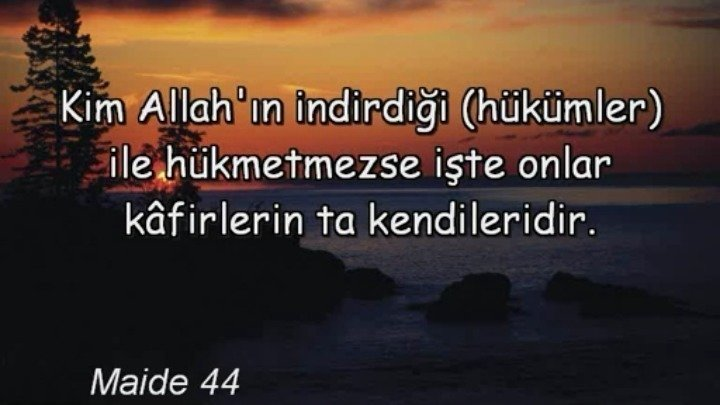

Kuran’ın ayetlerine, Hazreti Muhammed (S.A.V)’in sözlerine ve yaptıklarına, bunlardan çıkarılmış yorumlara dayanan, insanın yaşamını, toplumsal yaşamı düzenleyici, Tanrısal olduğu için hiçbir zaman değişmeyecek olan dinsel kurallar bütünü, İslam hukuku.
Şeriatta Kuran-ı Kerim'de yasak olan herşey yasak. Kardeşlerim sakın ama sakın şeriatı istememezlik yapmayın ve "kahrolsun Şeriat" gibi vb iğrenç,rezil sözler söyleyip istemeden KAFİR olmayın. Maide suresi 44.Ayette buyuruyor ki

Sakın üzülme kardeşim.Allah çok merhametlidir. Allah C.C iblisin bile tövbesini kabul etmiştir. Allah'tan af dile ve tövbe et. "Firavun tam tövbe edecekken Cebrail A.S Firavun'un ağzına tövbe etmesin diye toprak tıkadı.Eğer Cebrail A.S toprak tıkamasaydı Allah C.C zalim Firavun'unda tövbesini kabul edecekti." Şeriat zulüm değildir.Kainat ve yeryüzü Allah'ındır ve istediği gibi yönetir.
Allah C.C nurunu tamamlıyacak ŞERİAT GELECEKTİR.Hani o tek gidişlik cehennem bileti laiklik var ya Allah onu kahretsin. Unutma laikliği isteyen Şeriatı istemez Allah'a karşı dır.Casiye suresi 18.Ayette buyuruyor ki
"Sen artık o şeriata uy ve bilmeyen o cahillerin heva ve heveslerine uyma! Sonra sana da emrimizden bir yasa belirledik; artık ona uy, bilmeyenlerin arzularına uyma! Sonra (Ey Muhammed!) Sana da insanların uyacakları bir hayat sistemi (şeriat) verdik."
Atatürk Allah'ın indirdiği Hükümler ile Hükmetmediği için "KAFİR" dir. Sakın Atatürk'ün kafir olduğunu inkar etme! yoksa KURAN-I KERİM'e inkar etmiş olursun.